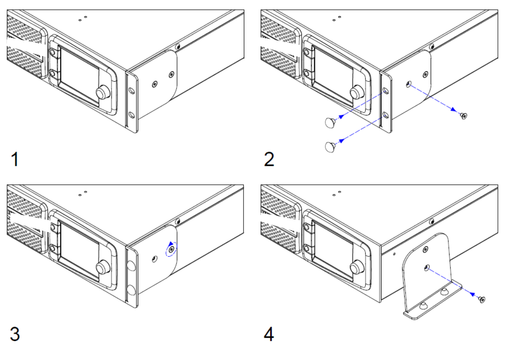
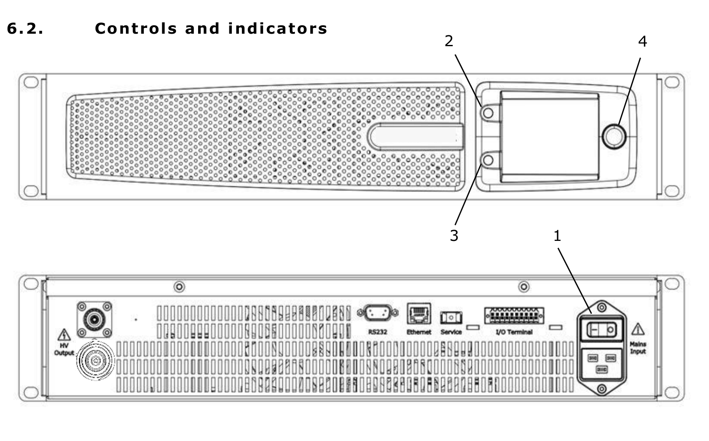
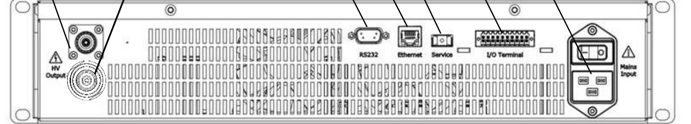
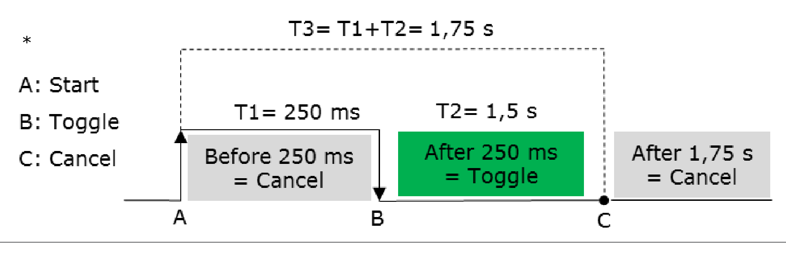
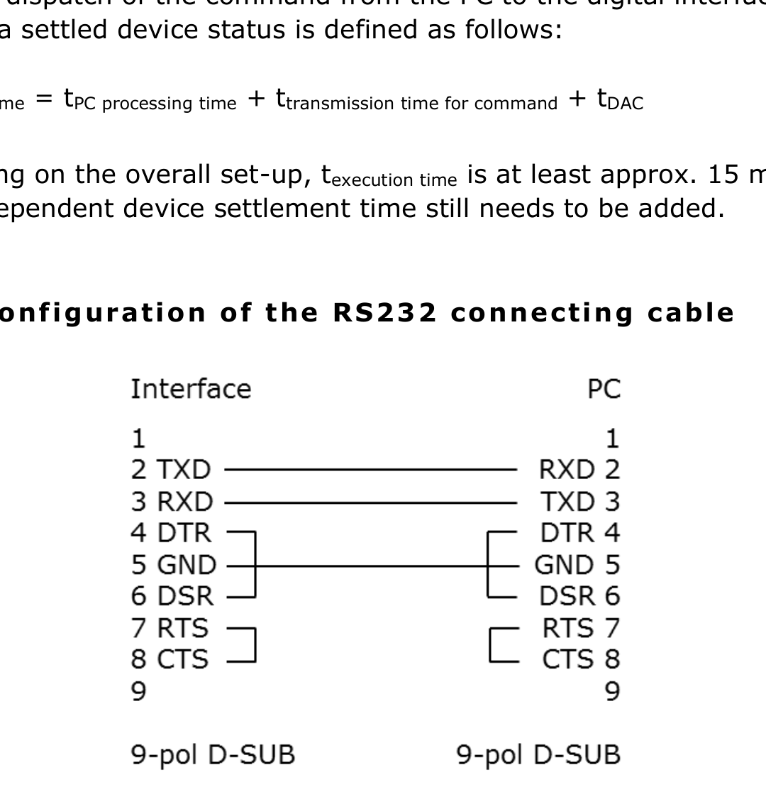
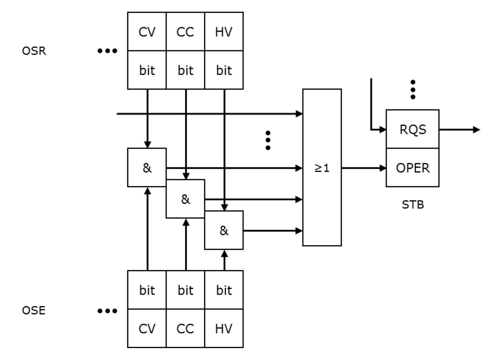

1. Important Basic Information
1.1 Standard Scope of Delivery
- Precision high-voltage HVX-Series power supply unit
- Accessories
- Mains connection line, 6.6 ft (2 m), with IEC socket
- Berkeley Nucleonics high-voltage cable with HV plug, cable length 9.8 ft (3 m)
- Plug for I/O terminal with integrated interlocking bridge
- HVX-Series Short Guide
1.2 Legal Notes
Liability, Warranty, Guarantee
Berkeley Nucleonics Corporation shall not be held liable for damage resulting from improper use of the products, from incorrect programming, or from failure to observe the operating instructions in whole or in part.
Warranty is 1 Year standard, unless otherwise specified. Materials and workmanship, return to manufacturer included. For details on the manufacturer's warranty, please refer to the terms of the agreement.
1.3 Owner's Responsibilities
The owner is responsible for ensuring that the power supply unit:
- is only used in accordance with its intended use,
- is set up and installed as specified (refer to chapter 5, Set-up and Start-up),
- is only operated by trained technicians.
1.4 What You Need to Know About This User Manual
User Manual as Part of the Device
- This user manual must be observed and applies only to precision high-voltage power supply units from the HVX-Series.
- Please keep the user manual available at the device.
- Please pass the user manual on to the next user or users.
Pictograms
1.5 Significance of the User Manual
Please note that:
- The user manual is part of the product.
- The user manual should be retained for the entire service life of the product and updated where applicable.
- The user manual must be passed on to the next owner or user of the product.
2. Safety
2.1 Safety Symbols on the Device
2.2 Safety Symbols in This Manual
2.3 Basic Safety Instructions
Device
For safety reasons, the device may not be opened under any circumstances. The warranty is also voided if any modifications are made to the device or if the device is opened.
Range of Use and User Manual
The device is designed for use in laboratories and production applications. Personnel must follow the instructions in the user manual. For this reason, it should be kept near the device at all times.
Requirements for Personnel
This device may only be used and placed into service by qualified technicians.
2.4 Intended Use
Safety, reliability, and performance can only be guaranteed if:
- the device is used for its intended purpose,
- upgrades, modifications, and repairs are performed exclusively by persons authorized by the manufacturer,
- the electrical installations comply with the applicable safety regulations,
- and the connecting and operating conditions prescribed in this user manual are observed.
2.5 Residual Risk and Precautions
The high-voltage power supply unit of the HVX-Series is delivered in perfect working condition. It creates radio interference (threshold values according to EN 61000-6-4, class B) when in operation. The operator is personally responsible for compliance with the specific safety regulations relating to a connected application.
There is a risk of electrical shock when starting, operating, or shutting down the high-voltage power supply unit, especially if:
- the output voltage is switched on although no load is connected to the HV output as directed,
- the device is operated in spite of a known defect,
- the connected application represents a violation of the applicable electro-technical safety regulations,
- the device has been switched off and there is dangerous voltage at the output due to external or internal residual charges,
- the instructions in this user manual were not fully observed.
The specific safety measures for the device are described in the following chapters.
The HVX-Series complies with the applicable European safety and EMC directives and harmonized standards. Emission threshold values comply with EN 61000-6-4, class B. See section 12, Declaration of Conformity, for the full list of directives and standards.
3. Technical Specifications
The precision high-voltage power supplies of the Berkeley Nucleonics HVX-Series are fully digitally regulated primary switching power supplies. A microcontroller and FPGA manage all regulation and monitoring. Active power factor correction keeps the units highly efficient and holds reverse transfer to the mains extremely low.
General
| Parameter | Specification |
|---|---|
| Function | Fully digitally regulated DC high-voltage power supply (microcontroller and FPGA) |
| Manufacturer | Berkeley Nucleonics |
| Model series | HVX-Series, standard versions including options |
| Output voltage UNOM | 1.5 kV to 30 kV DC |
| Power classes | 500 W, 2 kW, 3 kW |
| Output current INOM | up to 2 A |
| Supply voltage | 207 V AC to 253 V AC, 47 to 63 Hz (3 kW version); 187 V AC to 253 V AC, 47 to 63 Hz (500 W and 2 kW version); single-phase with active PFC |
| Device fuse | 2 x 16 AT (super time-lag miniature fuse) |
| Mains socket | IEC 60320, type C20 (rear) |
| Operating temperature | 32 to 104 F (0 to 40 C) |
| Humidity | 35 to 70%, non-condensing |
| Altitude | Up to 6,560 ft (2,000 m) |
| Environment | Up to pollution degree 2 |
| Display and control | 3.5-inch color TFT, 3-button manual control, structured menus, configurable code protection, error and event log with time tags |
| Output polarity | Reversible (positive or negative, earth-referenced) or floating (potential-free) |
| Discharge time (no load) | Typical 60 s; maximum 120 s |
| HV connector | HV connector (rear) |
| Potential separation, output | Per DIN EN 50178 and EN 61010 |
| Digital interfaces | Ethernet (TCP/IP) and RS232 on board; SCPI command set |
| I/O terminal | External interlock wiring, HV On/Off control and monitor, arc detection monitor (option) |
| Enclosure | 19-inch rack-mount or benchtop (integrated adapter) |
| Height | 2U, 3.5 in (89 mm) |
| Depth | 19.7 in (500 mm) |
| Weight | 1.5 kV up to 10 kV units: approximately 25.4 lb (11.5 kg); up to 30 kV units: approximately 36.4 lb (16.5 kg) |
Voltage stabilization
| Parameter | Specification |
|---|---|
| Setting range | Approximately 0.01% UNOM to 100% UNOM |
| Setting resolution | 16 bit |
| Line regulation (at +/-10% mains change) | < +/-0.01% UNOM |
| Load regulation (10 to 90% load step) | ≤ 0.05% UNOM |
| Response time (load step) | < 1 ms to 0.1% UNOM |
| Stability over 8 hours (stable conditions) | ≤ 0.01% UNOM |
| Temperature coefficient | ≤ 0.01% UNOM /K |
| Residual ripple (peak to peak) | ≤ 0.01% UNOM +/- 100 mV |
Current stabilization
| Parameter | Specification |
|---|---|
| Setting range | Approximately 0.01% INOM to 100% INOM |
| Setting resolution | 16 bit |
| Line regulation (at +/-10% mains change) | < +/-0.01% INOM |
| Load regulation | ≤ 0.05% INOM |
| Response time (load step) | < 1 ms to 0.1% INOM |
| Stability over 8 hours (stable conditions) | ≤ 0.01% INOM |
| Temperature coefficient | ≤ 0.01% INOM /K |
| Residual ripple, units < 20 kV (peak to peak) | ≤ 0.01% INOM +/- 100 mA |
| Residual ripple, units ≥ 20 kV (peak to peak) | ≤ 0.02% INOM +/- 0.5 mA |
Models and type designation
Each model carries the designation HVX-<nominal voltage>-<nominal current>. The order reference (part number) maps one to one to the source manufacturer for procurement.
| Model | Power | Voltage | Current | Polarity | Order ref (part no.) |
|---|---|---|---|---|---|
| HVX-1500-1400 flo | 2 kW | 1.5 kV | 1400 mA | Floating output | 00.210.113.4 |
| HVX-1500-2000 flo | 3 kW | 1.5 kV | 2000 mA | Floating output | 00.210.114.4 |
| HVX-1500-1400 | 2 kW | 1.5 kV | 1400 mA | Positive, negative or reversible | 00.210.113.x |
| HVX-1500-2000 | 3 kW | 1.5 kV | 2000 mA | Positive, negative or reversible | 00.210.114.x |
| HVX-5000-400 | 2 kW | 5 kV | 400 mA | Positive, negative or reversible | 00.210.143.x |
| HVX-5000-600 | 3 kW | 5 kV | 600 mA | Positive, negative or reversible | 00.210.144.x |
| HVX-10000-200 | 2 kW | 10 kV | 200 mA | Positive, negative or reversible | 00.210.163.x |
| HVX-10000-300 | 3 kW | 10 kV | 300 mA | Positive, negative or reversible | 00.210.164.x |
| HVX-20000-25 | 500 W | 20 kV | 25 mA | Positive or negative | 00.210.181.x |
| HVX-30000-17 | 500 W | 30 kV | 17 mA | Positive or negative | 00.210.191.x |
4. Design and Function
Working principle and functional description

The precision high-voltage power supplies of the Berkeley Nucleonics HVX-Series are fully digitally regulated primary switching power supplies. Active power factor correction makes the power input highly efficient and holds reverse transfer to the mains extremely low. The input voltage is rectified and smoothed, then converted to high-frequency AC by a full bridge. A high-voltage transformer steps the voltage up, and the result is rectified and smoothed into a stable DC output.
Depending on the connected load, the unit operates as a constant-voltage or constant-current source, and the switch between regulation modes is automatic. Nominal values can be set at the front-panel display (HMI), over the Ethernet or RS232 interface, or through the I/O terminal, and the high voltage is enabled the same way. The units are short-circuit proof. The high-voltage output is safe to touch and flashover-safe, even when unplugged. HVX-Series units can be supplied with options such as arc detection and ramp control.
Output characteristics
The HVX-Series supplies either continuous output voltage or continuous output current. In continuous operation it presents rectangular current-voltage output characteristics, as shown by the operating range below.

Regulation works by comparing actual and nominal values for current and voltage. When the load resistance is below the ratio of the nominal values, the current is regulated and the voltage is limited. When the load resistance is at or above that ratio, the voltage is regulated and the current is limited. The active control mode is shown on the front-panel display.
| Control mode | RLOAD < UREF / IREF | RLOAD ≥ UREF / IREF |
|---|---|---|
| I = IREF | Current regulation | Current limitation |
| U = UREF | Voltage limitation | Voltage regulation |
The output current is limited to the set nominal value IREF. During a short circuit a peak current can reach up to 500 times the nominal current INOM and then drops exponentially toward IREF according to the output capacitance. The high-voltage output is fully short-circuit resistant.
Safety concept
HVX-Series units may only be started and operated by qualified technicians. The following safety features are built in:
- The output voltage is not enabled by the power switch. The operator must press the HV button to apply high voltage to the output. The one exception is the power-on RESTORE function. When high voltage is active, the display shows a red HV indicator with the text "HV on".
- The output can be switched off remotely through the digital interfaces and the I/O terminal.
- The power input and the HV output are marked with warning symbols.
5. Set-Up and Start-Up
5.1. Set-Up
Special safety instructions for set-up
When selecting a location for setting up the device, take care to provide the ambient conditions specified in this manual (see section 3). Avoid excessive ambient temperature (Ta max. = 104 degrees F / 40 degrees C), excessive humidity (RH max. = 70 percent), and excessive dust or dirt build-up near the unit (max. pollution degree 2), as these may damage or impair the performance of the device.
Unpacking the power supply unit
Please proceed as follows:
- Check for visible damage to the packaging or the unit caused during shipping.
- Check the delivery for completeness (see section 1, Important basic information).
- Carefully set up the unit at the desired location (see section 5.1).
- The device can be installed directly in a 19-inch cabinet. The HVX-Series unit can also be used as a tabletop unit.
Using the HVX-Series unit as a tabletop unit
The HVX-Series unit can be used as a tabletop unit with a simple piece of conversion work.

5.2. Start-Up
Special safety instructions for initial start-up
Connecting the unit
Please follow these steps:
- Set the power switch to OFF.
- Connect the unit to mains power using the power cord supplied with the unit.
- Connect the load using the OEM HV connector (as supplied) and the attached HV cable. The HV cable's inner conductor carries the high voltage, while the cable shielding acts as the return conductor and is connected to the earth potential in the unit.
- If desired, connect the I/O terminal using the 20-pin plug (supplied) as required (see section 6.5, Controlling the unit via I/O terminal).
Checks and tests
- Press the power switch on the back of the device. The device starts up and displays the main menu once complete.
- Use the "Control Mode" menu to select "Front panel" (set as standard).
- Set the voltage to 0 on the rotary encoder.
- Turn the current to approximately 10 percent of INOM on the rotary encoder.
- For devices with the "ARC detection" option: reset the flashover cut-off via the menu.
- For devices with the "Reverse polarity" option: set the required output polarity.
- If errors or warnings are displayed, bring up the "Info / Event" menu and remedy the errors.
- Press the HV button in the main menu. The HV indicator is displayed in red, along with the text "HV on".
- Increase the voltage on the rotary encoder and check whether the instrument display for voltage rises to the connected output load value.
Switching off the power supply unit
- Recommended: switch the HV output off using the HV button so that the load circuit can also discharge. Monitor via the indicator.
- Use the power switch to switch the unit off. The screen will switch off.
6. Operation
6.1. Special safety instructions for operation
6.2. Controls and Indicators

Controls
| No. | Description |
|---|---|
| 1 | Mains switch. Used to switch the device on and off. |
| 2 | HV button (pushbutton). Switches the output voltage on and off, depending on whether the HV field in the display shows "HV off" or "HV on". |
| 3 | Function button (pushbutton). Performs the function shown in the function field. |
| 4 | Rotary encoder (press-and-turn knob). Turning the encoder selects the fields of the respective menu highlighted in dark grey; pressing the encoder controls them. Either another menu is accessed or the field is selected, after which you can change the field's internal settings using the encoder. Pressing the encoder again confirms the change. |
Indicators
The front-panel HMI display lets you view the individual menus and their settings. The layout of the display is shown below.

| No. | Description |
|---|---|
| 1 | HMI display. Allows you to view the individual menus and their settings. Selectable fields are highlighted in dark grey; light grey fields are for indication only. A light-coloured frame marks the selected field. |
| 2 | HV field. Displays the HV status. If it is not shown, the output voltage is switched off and cannot be switched on in the current menu. |
| 3 | Info section. Displays current information, warnings, and errors. This area is active in every menu. |
| 4 | Menu section. Contains the menus' indicator and control fields. |
| 5 | Function field. Shows the function of the function button. |
| 6 | Indicator field. Shows information; cannot be selected. |
| 7 | Selection frame. Indicates the selected control field. |
| 8 | Control field. Shows information; settings can be changed or menus accessed. |
Device connections

| No. | Description |
|---|---|
| 1A | HV output for 1.5 kV to 10 kV unit: Plug HB 20 PTFE. |
| 1B | HV output for 20 kV and 30 kV unit: Plug HVX 30 kV. |
| 2 | RS232 interface: 9-pin D-sub plug. |
| 3 | Ethernet interface: RJ45 connector (8P8C). |
| 4 | Service interface: USB. |
| 5 | I/O terminal: 20-pin. |
| 6 | Mains connection: IEC 60320 device connector, type C20. |
6.3. Operating the Device
HV output
The HVX-Series unit features a Berkeley Nucleonics HV output socket designed for the maximum device output voltage. The accompanying plug with pre-installed HV cable (made by Berkeley Nucleonics) is included with the unit. This cable is to be used to connect a load before every switch-on with the appropriate HV plug. The original Berkeley Nucleonics HV cable must be used to connect a load. The HV output is short-circuit resistant.
Output characteristic curve, HV output
Based on the output load, the following operating modes are set:
| Control modes | RLOAD < UREF / IREF | RLOAD ≥ UREF / IREF |
|---|---|---|
| I = IREF | Current regulation | Current limitation |
| U = UREF | Voltage limitation | Voltage regulation |
Short circuit
The output current is limited to the set nominal value IREF. A peak current of IP occurs during a short circuit. This may be up to 500 times the unit's nominal current INOM and drops exponentially to IREF according to the output capacity. The HV output is fully short-circuit resistant.
Structure of the HMI main menu
The HMI is the main control unit for the HVX-Series unit. From here you can use all of the integrated functions and implement all available settings.
The main menu shows the actual values for voltage and current. The two control fields allow you to access the "Set Voltage/Current" menu.
The HV field is visible. It is blue and marked "HV off" if the HV output is not active. If the output is switched on, the HV field is red and marked "HV on".
If the HV output is switched off, the function button takes you to the "Settings" menu. If the HV output is switched on, the function button takes you directly to the "Info / Event" menu so that you can view status messages.
All other settings menus are reached from the "Settings" menu; their functions are described below. Some menus can only be selected if the corresponding options are integrated.

"Set Voltage/Current" menu
This menu shows the actual values (indicator fields) and nominal values (control fields) for current and voltage. You can set the current and voltage using the control fields. The HV field is active and can be used.
If a control field is selected, you can use the function button to switch between "Fine" and "Coarse". Otherwise, you can use the function button marked "Back" to return to the main menu.
"OVP/OCP" menu
This menu shows the current set values for the overvoltage and overcurrent protection (control fields). The values apply to both positive and negative polarity. The values can be set by selecting the two control fields. They must be no more than 1 percent over the device-specific maximum values UNOM and INOM.
If a control field is selected, you can use the function button to switch between "Fine" and "Coarse". Otherwise, use the function button marked "Back" to return to the "Settings" menu. The HV field is not active and cannot be used.
"Limit V/C" menu
This menu shows the current limit values for the adjustable current and voltage (control fields). This limits the adjustable nominal values on the device. The set values continue to apply when the polarity is switched. The values can be set by selecting the two control fields. They must be no more than the device-specific maximum values UNOM and INOM.
If a control field is selected, you can use the function button to switch between "Fine" and "Coarse". Otherwise, use the function button marked "Back" to return to the "Settings" menu. The HV field is not active and cannot be used.
"Ramp" menu (option)
This menu shows the current set value for the voltage ramp, as well as whether the "voltage ramping" option is active (control fields). The value range for voltage ramping is between 1 and 10 times UNOM.
Use the upper field to switch the option between active and inactive. If the lower control field is selected, you can use the function button to switch between "Fine" and "Coarse". Otherwise, use the function button marked "Back" to return to the "Settings" menu. The HV field is not active and cannot be used.
"ARC Detection" menu (option)
This menu shows whether the "ARC detection" option is active and which mode is selected (control fields). Use the upper field to switch the option between active and inactive. Use the lower control fields to choose between "ARC detection with warning" and "ARC detection with warning and switch-off of the HV output" (see the device options section).
The function button returns you to the "Settings" menu. The HV field is not active and cannot be used.
"Control Mode" menu
This menu shows the HVX-Series unit's control interfaces and which is selected as the bus master (control fields). The bus master has control; all other interfaces have read access only. The bus master can only ever be set through the HMI, even if the HMI itself is not the bus master.
The control fields allow you to choose between the HMI, RS232, and Ethernet interfaces. The function button returns you to the "Settings" menu. The HV field is not active and cannot be used.
"Interface" menu
This menu shows the interface data for "IP address", "Port", "Subnet mask", "Gateway address", "Ethernet Timeout" (Ethernet), and baud rate (RS232) in control fields, plus the unique MAC address (indicator field). The "Ethernet Timeout" can be set from 1 to 600 s. You can use the control fields to adjust the values accordingly.
The function button returns you to the "Settings" menu. The HV field is not active and cannot be used.
"Setup" menu
This menu shows the current status of various functions and options (control fields). Options that are not integrated into the device are shown only through indicator fields. The following settings can be implemented:
| Setting | Function |
|---|---|
| Buzzer | Switches the device's internal buzzer on and off. |
| Backlight | Adjusts the screen brightness. |
| SW-Upload | Launches a software update. |
| Discharge | Switches rapid discharge on and off ("Rapid Discharge" option). |
| OCP | Switches the OCP function on and off. |
| PO Restart | Defines the behaviour of the device when it is switched back on after switch-off or power failure. RESTORE: the last device status is restored (HV status, nominal values, limit values, overvoltage and overcurrent protection, bus master). PRESET: similar to RESTORE, but the HV output must be switched on manually. ZERO: the nominal values are reset to 0 and the standard device status is set (HV status = 0, nominal values = 0, limit and protection values = MAX, bus master = HMI). |
| HMI Averaging | Sets the number of measured values from which a mean value is calculated for display on the HMI. The range is 1 to 10. Standard is 3. |
| Default Settings | Resets the device to standard conditions (Set V/C, Limit V/C, OVP/OCP, voltage ramping, ARC detection, polarity, PO Restart, OCP on/off). |
The function button returns you to the "Settings" menu. The HV field is not active and cannot be used.
"Code" menu
This menu shows which menus are protected against unauthorised use by means of a PIN (control fields), and provides two control fields through which the current PIN can be entered or a new PIN set.
The menus to be protected are set using the right-hand control fields. The selection is confirmed by entering the PIN:
- Select the "PIN Code" field. A window for entering the PIN appears.
- Turn the rotary encoder to select the position in the four-digit PIN.
- While pressing the rotary encoder, turn it to change the value at the selected position.
- Press the "Back" function button to confirm the PIN entry.
If the correct PIN has been entered, the message "Pin OK" appears in the bottom section of the display. Otherwise the message "Wrong Pin" appears.
To enter a new PIN, select the "new PIN code" field. A window for entering the new PIN appears. The current PIN is entered in the upper control field, the new PIN in the lower field. Press the rotary encoder twice to leave a control field. Use the function button to close the window and confirm the entry.
The function button returns you to the "Settings" menu. The HV field is not active and cannot be used.
"Identification" menu
This menu shows the device-specific data for "Serial number", "Item number", "HVX-Series firmware version", and "System runtime" (indicator fields). The menu also provides a control field for accessing the "SW/HW packages" sub-menu. The function button returns you to the "Settings" menu. The HV field is not active and cannot be used.
"SW/HW packages" sub-menu
This menu shows the hardware and software versions of each of the individual components of the device (indicator fields). The function button returns you to the "Identification" menu. The HV field is not active and cannot be used.
"Info / Event" menu
This menu shows current messages about the device status. Active error messages are displayed in red, warnings in yellow, and status messages in blue. The menu also provides a control field for resetting all messages ("Quit Error"). An interlock will remain in place if the reason for it persists. Another control field allows you to access the "Error History" sub-menu.
The HV field is active and the HV output can be controlled. If the HV output is active, the two control fields cannot be selected, and the function button takes you directly to the main menu. If the HV output is not active, the function button takes you back to the "Settings" menu.
"Error History" sub-menu
The "Error History" shows internal device event codes with IDs and time stamps, intended for servicing. The function button returns you to the "Info / Event" menu. The HV field is not active and cannot be used.
6.4. Monitoring and Controlling the Unit via Web Server
The device offers a web server interface that can be reached through a browser and the IP address of the device, entered into the browser address bar, when on the same network. The following screen is presented:

Every framed field is a button used to make settings or to reach menus. Settings can only be made if the bus master "Ethernet HTTP" is set.
| Control | Function |
|---|---|
| HV-ON(OFF) | Switches the HV output on and off. |
| V/C Limit/Protection | Opens a menu to set the limit and protection values of voltage and current. |
| SYS-OK(FAIL) | Shows the current device status. |
| Ethernet configuration | Shows the current Ethernet settings. |
General Control
Settings of voltage and current can be made in the empty fields on the left side of the screen. The actual values are shown on the right side. The same applies to the limit and protection settings of voltage and current.
Device status
The "SYS-OK(FAIL)" button opens the device status menu, where errors are also shown. If the device has failed, the errors can be cleared via the "Quit Errors" button once they are fixed. Example shown for a HVX-1500-1400 rev unit.
6.5. Controlling the Unit via I/O Terminal
The following device functions and information are available externally via the I/O terminal:
- Interlock function
- Read-out of ARC detection ("ARC Detection" option)
- Read-out of HV output ("HV on" and "HV off")
- Control of HV output

Pin assignment (20-pin plug)
| Pin | Description | Explanation |
|---|---|---|
| 1, 2 | /Interlock Input | Opening a potential-free contact activates interlocking and therefore switches off the HV output. |
| 3, 4 | HV ON/OFF | Toggles the HV output (see timing notes below). |
| 5, 6 | NC | Not connected. |
| 7, 8 | HV On Output | Signal high at HV On active. Open: max. 27 VDC / AC peak. Closed: max. 500 mA. |
| 9, 10 | ARC-Detection Output | Signal high at voltage flashover ("ARC Detection" option). Open: max. 27 VDC / AC peak. Closed: max. 500 mA. |
| 11, 12 | NC | Not connected. |
| 13-20 | NC | Not connected. |
Timing
The switch must be operated for a minimum of 250 ms to trigger toggling of the HV output. If the switch is released within 250 ms, the signal is ignored. For recognition of the signal, the maximum operation time of the switch is 1.75 s. The signal is ignored if the switch is operated for more than 1.75 s.

- Unassigned contacts may not be connected.
- Use a shielded cable with shielding on the GND (device earth) as the connecting cable.
- Maximum length for the connecting cable: 19.7 ft (6 m).
- The reference ground of the I/O terminal is located on the device earth.
7. Device Options
7.1 General Information
Berkeley Nucleonics HVX-Series power supply units can be supplied with various options. The options described below can be retrofitted at the customer's site.
7.2 Description of Device Options
Option: "ARC detection"
This option facilitates the detection of flashovers in the output voltage, which the device can report and, if desired, can also use to switch off the output voltage. ARC detection is triggered under the following conditions:
du ≥ 10% UNOM(change in output voltage or spike pulses)dt ≤ 100 ms
This option can be retrofitted at the customer's site.
ARC detection may be triggered under load conditions when the high-voltage power supply is shut down using the HV button.
Option: "Ramp control"
This option facilitates controlled upward and downward regulation of the output voltage with an adjustable gradient. The adjustable range lies between 1 V/s and 10 · UNOM V/s. This option can be retrofitted at the customer's site.
For safety reasons, the ramping function is deactivated when the output voltage is switched off.
8. Digital Interface Specifications
8.1 General Information
The digital interface described here forms an intelligent interface with a PC in order to facilitate setting or read-out of device parameters. It has been specially designed for control tasks in measurement and power supply technology.
8.2 Technical Specifications
Digital interfaces:
- RS232
- Ethernet (TCP/IP)
The communication channels for Ethernet and RS232 can be used in parallel.
Only the bus master (Ethernet, RS232, HMI, I/O terminal) has write access. Read access always exists. An incoming SCPI command is buffered when an SCPI command from the other channel is currently being executed (RS232 or Ethernet), and is then executed. You can select the bus master from the HMI and the current bus master.
- Ethernet insulation voltage: 1.5 kVRMS
- RS232 insulation voltage: 2.5 kVRMS
- The control command set is based on IEC 60488-2, Standard digital interface for programmable instrumentation, Part 2: Codes, formats, protocols and common commands (SCPI).
RS232
| Baud rate | Adjustable: 9600 to 115200 baud |
|---|---|
| Data string | 8 bit, 1 stop bit, no parity |
| Command closure | LF character (dec. 10) |
| Protocol | None |
| Length of connecting cable (shielded) | As per baud rate: max. 500 ft (9600) max. 49 ft (19200) max. 16 ft (57600) < 6.5 ft (115200) |
Ethernet
| Supported | IEEE 802.3, half and full duplex 10/100 Mbit |
|---|---|
| Delivery address: IP | 192.168.0.100 |
| Delivery address: SN | 255.255.255.0 |
| Delivery address: GW | 192.168.0.254 |
| Delivery address: Port | 6000 |
| Protocol | TCP/IP, SCPI |
| Length of connecting cable | max. 1640 ft (coaxial cable, 10 Mbit) max. 328 ft (Cat5e, 100 Mbit) |
8.3 Time Response
- SCPI commands via Ethernet must not be sent faster than 4 ms.
- SCPI commands via RS232 must not be sent faster than 16 ms.
- SCPI commands sent simultaneously via Ethernet and RS232 must not be sent faster than 4 ms via Ethernet and 20 ms via RS232.
The hardware reaction time must also be taken into account, for example when setting the voltage or the current, the voltage switch-on and switch-off, or the polarity. Real-time capability is not possible due to the interface standards used. The period between dispatch of the command from the PC to the digital interface and achievement of a settled device status is defined as follows:
t_execution_time = t_PC_processing_time + t_transmission_time_for_command + t_DAC
Depending on the overall set-up, texecution time is at least approximately 15 ms, to which a model-dependent device settlement time still needs to be added.
8.4 Configuration of the RS232 Connecting Cable
The RS232 connecting cable is wired as a null-modem (crossover) cable between the device 9-pin D-sub connector and the PC. Use a shielded cable with the shield bonded to device earth. The pin assignment is as follows:

| Device (9-pin D-sub) | Signal | PC (9-pin D-sub) |
|---|---|---|
| Pin 2 (RxD) | Receive data | Pin 3 (TxD) |
| Pin 3 (TxD) | Transmit data | Pin 2 (RxD) |
| Pin 5 (GND) | Signal ground | Pin 5 (GND) |
| Shield | Cable shield (device earth) | Connector shell |
The device uses a three-wire interface (RxD, TxD, GND) with no hardware handshaking. Unassigned pins must not be connected.
9. Programming
The following describes the SCPI commands available for controlling the device. They apply regardless of the interface (Ethernet or RS232) that is used.
When operating the device, including via the digital interface, please ensure that you observe the applicable user manual. Optional device functions may include additional interface functions and/or commands.
9.1 Communication over the ASCII Terminal
Communication with the device may take place from a PC, for example through the program "PuTTY" (Ethernet, RS232).
When connecting via RS232, the corresponding serial port to which the device is connected on the PC and the baud rate set on the device must be entered. It is recommended to set "Local echo" in the "Terminal" to "Force on" so that your own input is visible in the terminal window. Manually entered commands must be sent with Ctrl + J to append a Line Feed (LF character).
When connecting via Ethernet, the IP address and port of the device must be entered. The connection type must be set to "Raw".
9.2 SCPI Command Syntax
Unless described otherwise, the command sequences comprise ASCII characters in the range of 0x20 (32) to 0x7D (125) in the following format:
[Command]<if applicable [Space][Parameter]>[LF]
Example (the symbol « denotes the LF terminator, the symbol ␣ denotes a space):
*SRE?« *SRE␣16«
Commands and Queries
In this document, the characters required for the commands are written in upper case. Lower case letters are optional and can be omitted. It must be ensured that the individual words of the command are conveyed either in their long format or in their short format.
VOLTage␣1000« VOLT␣1000« OUTPu:STAT?« (generates: -100,"Command␣Error") OUTPut:STATe?« 1« OUTP:STATe?« 0«
A query is formed by appending a question mark (?) to the command keyword. The device returns the requested value followed by the LF terminator.
Parameters and Terminators
Each command sequence is closed with an LF character («). Each command sequence via Ethernet can also be closed with 0x00. There is generally a space between the command and a possible parameter (hex 0x20: " "). Once the command has been sent by the computer (PC) to the interface, it is executed immediately if another command is not already being executed.
If the entry of the command causes an error, no response is returned, but an error message is stored in the EMQ (cf. section 9.3.50).
Command Tree
Commands may also contain sub-commands, which are attached using the colon operator (:):
[Command]<if applicable [:][Command]…><if applicable [Space][Parameter]>[LF]
Example:
SAFE:VOLT:ARC:STAT␣1«
The colon operator must not be the first character. In addition, the root keyword SOURce is neither required, nor taken into account, nor accepted.
:MEAS:VOLT?« -100,"Command␣Error"« SOURce:VOLT␣1000« -100,"Command␣Error"«
Case Sensitivity and Separators
The SCPI commands are not case-sensitive.
VOLTAGE␣1000« sets voltage to 1 kV VOltAGe␣1000« sets voltage to 1 kV voltage␣1000« sets voltage to 1 kV volT␣1000« sets voltage to 1 kV
There may be up to 8 whitespaces (for example hex 0x0B, 0x20) at the start of a command without a "Cmd Error" being generated. The SCPI command separator (;) is not accepted. Commands must be entered line by line. There cannot be several commands in one line.
*RST;*IDN?« (generates: -100,"Command␣Error") VOLT␣1000;MEAS:VOLT?« (generates: -100,"Command␣Error")
9.3 SCPI Commands
The following commands control the Berkeley Nucleonics HVX-Series high-voltage power supply over the digital interface. They apply regardless of the interface (Ethernet or RS232) that is used. Each command sequence is closed with an LF character. Commands are not case sensitive, and each keyword may be sent in its long or short form. Optional device functions may add further commands. Commands marked "(option)" are only available when the corresponding option is integrated; calling them otherwise triggers an execution error.
Common Commands
*RST
Reset command. Sets the registers (SRE, ESR, ESE, OSE, QSE) and the EMQ to their initial state and puts the device into a safe condition. The HV output is switched off if it is on, and any interlock status is reset as long as the underlying error does not persist. Otherwise the interlock status remains in place.
| Syntax | *RST |
|---|---|
| Response | none |
| Example | OUTP:STAT? → 1*ESR? → 128*RSTOUTP:STAT? → 0*ESR? → 0 |
*CLS
Clear Status. Empties the ESR and EMQ.
| Syntax | *CLS |
|---|---|
| Response | none |
| Example | *ESR? → 32*CLS*ESR? → 0SYST:ERR? → 0,"No Error" |
*IDN?
Identification query. Returns an identification string from the HVX-Series device.
| Syntax | *IDN? |
|---|---|
| Response | [Manufacturer],[Item number],[Serial number],[Firmware version] |
| Example | *IDN? → Berkeley Nucleonics,00 210164.1,123456789,P001.000 |
*OPT?
Option query. Returns a string with the functions and options of the device. Individual abbreviations are separated by a comma. Option list: HMI (local HMI installed, standard), UNI (unipolar device), POS (positive device), NEG (negative device), SWI (switchable device), HP (highest precision), ARC (ARC detection), DIS (rapid discharge), VRP (voltage ramping).
| Syntax | *OPT? |
|---|---|
| Response | [Option/function abbreviation](,…) |
| Example | *OPT → HMI,UNI,POS*opt? → HMI,SWI,HP,DIS |
*ESR?
Returns the current Event Status Register (ESR) and empties it.
| Syntax | *ESR? |
|---|---|
| Response | [Value] (see 9.4.2 Event Status Register) |
| Example | *ESR? → 32 (CME)*ESR? → 0 (no status bit set) |
*ESE [Value]
Sets the bits of the ESE for passing events of the ESR on to the STB (see 9.4.6 Enable registers).
| Syntax | *ESE [Value] (see 9.4.2 Event Status Register) |
|---|---|
| Response | none |
| Example | *ESE 48 (releases bits 'CME' and 'EXE' for passing on to the STB) |
*ESE?
Returns the current setting for the ESE (see 9.4.6 Enable registers).
| Syntax | *ESE? |
|---|---|
| Response | [Value] (see 9.4.2 Event Status Register) |
| Example | *ESE? → 176 (bits 'HVT', 'CME' and 'EXE' set for passing on) |
*STB?
Returns the Status Byte Register (STB) and empties it.
| Syntax | *STB? |
|---|---|
| Response | [Value] (see 9.4.5 Status Byte Register) |
| Example | *STB? → 16 (EMQ is not empty) |
*SRE [Value]
Sets the bits in the SRE for passing on to the STB (see 9.4.6 Enable registers and 9.4.7 Service Request Enable Register).
| Syntax | *SRE [Value] (see 9.4.5 Status Byte Register) |
|---|---|
| Response | none |
| Example | *SRE 16 (sets the bit 'MAV') |
*SRE?
Returns the setting for the SRE (see 9.4.6 Enable registers and 9.4.7 Service Request Enable Register).
| Syntax | *SRE? |
|---|---|
| Response | [Value] (see 9.4.5 Status Byte Register) |
| Example | *SRE? → 16 |
Output
OUTP:STAT [Value]
Switches the high voltage on or off.
| Syntax | OUTPut:STATe [Value] |
|---|---|
| Parameter | 'ON' or '1', 'OFF' or '0' |
| Response | none |
| Example | OUTP:STAT? → 0OUTPut:STATe ONOUTPut:STATe? → 1OUTP:STAT 0OUTP:STAT? → 0 |
OUTP:STAT?
Returns the current HV status.
| Syntax | OUTPut:STATe? |
|---|---|
| Response | [Value] ('0' for OFF, '1' for ON) |
OUTP:POL:[Value]
Sets the polarity of the device and adopts the present amount of voltage and current set. Only available on a reversible device.
| Syntax | OUTPut:POLarity:[Value] or OUTPut:POLarity [Value] |
|---|---|
| Parameter | POSitive | NEGative |
| Response | none |
| Example | OUTPut:POL:POS (generates -100,"Command Error" on a negative device)OUTPut:POLarity? → POSOUTP:POL NEGative (generates -100,"Command Error" on a positive device)OUTP:POL? → NEG |
OUTP:POL?
Returns the current polarity of the device.
| Syntax | OUTPut:POLarity? |
|---|---|
| Response | [Value] (POS | NEG) |
Voltage
VOLT [Value]
Sets the nominal value for the output voltage. The maximum nominal value is limited by the device type and the voltage limit setting. On a reversible device the polarity can also be modified by setting the reference voltage.
| Syntax | VOLTage [Value] |
|---|---|
| Parameter | Number with an optional decimal place. Both ',' and '.' are accepted as decimal points. The unit is volts. A '+' may precede a positive output voltage. A '-' before a negative output voltage is accepted only on a negative or pole-reversible device, where it is mandatory. A 'V' after the number is optional. |
| Response | none |
| Example | VOLT +2000 (generates -100,"Command Error" on a negative device)VOLT? → 2000.0VOLTage 300.5VOLTage? → 300.5VOLT -3500,6V (generates -100,"Command Error" on a positive device)VOLT? → -3500.6 |
VOLT?
Returns the nominal value for the voltage in volts.
| Syntax | VOLTage? |
|---|---|
| Response | [Value] (number with a decimal place; the decimal point is '.'. A '-' always precedes a negative voltage. The unit is volts. No 'V' follows the number.) |
VOLT:LIM [Value]
Sets a limit value for the output voltage in volts. If the device polarity is positive, the limit value must be set positive (with or without a preceding '+'). If the polarity is negative, a preceding '-' is mandatory. The amount of the limit value is negated on pole reversal.
| Syntax | VOLTage:LIMit [Value] |
|---|---|
| Parameter | As for VOLT [Value]. |
| Response | none |
| Example | VOLT:LIM +3000 (generates -100,"Command Error" on negative polarity)VOLT:LIM? → 3000.0VOLTage:LIM 2500,0VVOLT:LIMit? → 2500.0VOLT:LIMit -2000.0 (generates -100,"Command Error" on positive polarity)VOLTage:LIMit? → -2000.0 |
VOLT:LIM?
Returns the current set voltage limit in volts. The leading sign indicates the device's current polarity.
| Syntax | VOLTage:LIMit? |
|---|---|
| Response | [Value] (as for VOLT?) |
VOLT:PROT [Value]
Sets the value for the overvoltage protection (OVP) in volts. This value may be up to 1 % above the maximum device voltage. On positive polarity, the OVP must be set positive (with or without a preceding '+'). On negative polarity, a preceding '-' is mandatory. The amount of the OVP is negated on pole reversal.
| Syntax | VOLTage:PROTection [Value] |
|---|---|
| Parameter | As for VOLT [Value]. |
| Response | none |
| Example | VOLT:PROT 4000 (generates -100,"Command Error" on negative polarity)VOLT:PROT? → 4000.0VOLT:PROT +3000.0VOLTage:PROT? → 3000.0VOLTage:PROT -2500,0V (generates -100,"Command Error" on positive polarity)VOLT:PROT? → -2500.0 |
VOLT:PROT?
Returns the current set value for the overvoltage protection (OVP) in volts.
| Syntax | VOLTage:PROTection? |
|---|---|
| Response | [Value] (as for VOLT?) |
VOLT:RAMP [Value] (option)
Sets the value for voltage ramping in volts per second, if this option is integrated into the device. Otherwise the command triggers an execution error.
| Syntax | VOLTage:RAMPing [Value] |
|---|---|
| Parameter | Positive number with an optional decimal place. The decimal point is '.'. The unit is V/s. The adjustable range is between 1 and 10 · VMAX. A '+' may precede the number on positive polarity. A '-' must precede the number on negative polarity. A 'V' after the number is optional. The set value is adopted with the opposite sign on pole reversal. |
| Response | none |
| Example | VOLT:RAMP 200 (generates -100,"Command Error" on negative polarity)VOLT:RAMP? → 200.0VOLTage:RAMP +3000.0VOLTage:RAMP? → 3000.0VOLTage:RAMPing -10000.0 (generates -100,"Command Error" on positive polarity)VOLTage:RAMPing? → -10000.0 |
VOLT:RAMP? (option)
Returns the current set voltage ramp in volts per second.
| Syntax | VOLTage:RAMPing? |
|---|---|
| Response | [Value] (number with a decimal place; a '-' always precedes a negative number. The decimal point is '.'. The unit is V/s. Always returns '0' if the option is not integrated.) |
VOLT:RAMP:STAT [Value] (option)
Switches the current set voltage ramping on or off, if this option is integrated into the device. Otherwise the command triggers an execution error.
| Syntax | VOLTage:RAMPing:STATe [Value] |
|---|---|
| Parameter | 'ON' or '1' | 'OFF' or '0' |
| Response | none |
| Example | VOLT:RAMP:STAT ONVOLT:RAMP:STAT? → 1VOLTage:RAMP:STATe offVOLT:RAMPing:STATe? → 0VOLT:RAMPing:STAT 1VOLTage:RAMP:STAT? → 1 |
VOLT:RAMP:STAT? (option)
Returns the current status of the voltage ramping function. If the voltage ramping option is not integrated, the returned value is always '0'.
| Syntax | VOLTage:RAMPing:STATe? |
|---|---|
| Response | [Value] ('0' for OFF | '1' for ON) |
Measurement
MEAS:VOLT?
Returns the actual value for the output voltage in volts.
| Syntax | MEASure:VOLTage? |
|---|---|
| Response | [Value] (as for VOLT?) |
| Example | OUTP:STAT? → 0VOLT 2000MEAS:VOLT? → 0.0OUTPut:STATe ONMEASure:VOLTage? → 2000.0 |
Current
CURR [Value]
Sets the nominal value for the output current in milliamperes.
| Syntax | CURRent [Value] |
|---|---|
| Parameter | Number with an optional decimal place. Both ',' and '.' are accepted as decimal points. A preceding '+' is optional. A preceding '-' is mandatory on a negative-polarity device. An 'mA' after the number is optional. |
| Response | none |
| Example | CURR 10 (generates -100,"Command Error" on negative polarity)CURRent? → 10.0CURRent +20,0CURR? → 20.0CURR -25.0mA (generates -100,"Command Error" on positive polarity)CURR? → -25.0 |
CURR?
Returns the nominal value for the current in milliamperes.
| Syntax | CURRent? |
|---|---|
| Response | [Value] (number with a decimal place; the decimal point is '.'. The unit is mA. A '-' precedes a negative current.) |
CURR:LIM [Value]
Sets a limit value for the output current in milliamperes. The maximum value corresponds to the device's maximum value. On positive polarity an optional '+' may precede the value. On negative polarity a preceding '-' is mandatory.
| Syntax | CURRent:LIMit [Value] |
|---|---|
| Parameter | As for CURR [Value]. |
| Response | none |
| Example | CURR:LIM +30 (generates -100,"Command Error" on negative polarity)CURR:LIM? → 30.0CURRent:LIM +25,0mACURR:LIMit? → 25.0CURR:LIMit -20.0 (generates -100,"Command Error" on positive polarity)CURRent:LIMit? → 20.0 |
CURR:LIM?
Returns the set limit value for the current in milliamperes.
| Syntax | CURRent:LIMit? |
|---|---|
| Response | [Value] (as for CURR?) |
CURR:PROT [Value]
Sets the value for the overcurrent protection (OCP) in milliamperes. The set value must be no more than 1 % above the maximum device current.
| Syntax | CURRent:PROTection [Value] |
|---|---|
| Parameter | As for CURR [Value]. |
| Response | none |
| Example | CURR:PROT 40 (generates -100,"Command Error" on negative polarity)CURR:PROT? → 40.0CURR:PROT +30.0CURRent:PROT? → 30.0CURRent:PROT -25,0mA (generates -100,"Command Error" on positive polarity)CURRent:PROT? → -25.0 |
CURR:PROT?
Returns the current set value for the overcurrent protection (OCP) in milliamperes.
| Syntax | CURRent:PROTection? |
|---|---|
| Response | [Value] (as for CURR?) |
CURR:PROT:MOD [Value]
Sets the overcurrent protection (OCP) active or inactive.
| Syntax | CURRent:PROTection:MODe [Value] |
|---|---|
| Parameter | 'ON' or '1', 'OFF' or '0' |
| Response | none |
| Example | CURR:PROT:MOD 0CURR:PROT:MOD? → 0 (OCP not active)CURRent:PROT:MODe 1CURR:PROTection:MODe? → 1 (OCP active) |
CURR:PROT:MOD?
Returns whether the overcurrent protection (OCP) is active or inactive.
| Syntax | CURRent:PROTection:MODe? |
|---|---|
| Response | [Value] ('0' for OFF, '1' for ON) |
MEAS:CURR?
Returns the actual value for the current.
| Syntax | MEASure:CURRent? |
|---|---|
| Response | [Value] (same as CURRent?) |
| Example | CURR 20.0MEAS:CURR? → 0.0OUTPut:STATe ONMEAS:CURRent? → 20.0OUTP:POL:NEGMEASure:CURRent? → -20.0 |
Status
VERS?
Returns the device's current software version, that is, the software versions for both microcontrollers.
| Syntax | VERSion? |
|---|---|
| Response | P[Version].[Revision],P[Version].[Revision] |
| Example | VERS? → P001.000,P001.000VERSion? → P001.002,P001.003 |
STAT:OPER?
Returns the status of the Operation State Register (OSR).
| Syntax | STATus:OPERation? |
|---|---|
| Response | [Value] (see 9.4.1 Operation State Register) |
| Example | STAT:OPER? → 2568 (HV OFF, polarity POS, bus master HMI, local mode)STATus:OPERation? → 4181 (HV ON, voltage limited, polarity NEG, bus master Ethernet, remote) |
STAT:OPER:BIT[Value]
Returns the value for an individual bit of the OSR.
| Syntax | STATus:OPERation:BIT[Value] (see 9.4.1 Operation State Register) |
|---|---|
| Response | [Value] ('0' or '1') |
| Example | STAT:OPER:BIT0 → 1 (HV ON)STATus:OPER:BIT04 → 1 (polarity NEG)STATus:OPERation:BIT6 → 0 (Ethernet TCP/IP not bus master) |
STAT:OPER:ENAB [Value]
Writes the OSE, that is, determines which bits of the OSR can set the OPER bit in the STB (see 9.4.6 Enable registers).
| Syntax | STATus:OPERation:ENABle [Value] |
|---|---|
| Parameter | 1 to 5 positions; preceding zeros are accepted (see 9.4.1 Operation State Register). |
| Response | none |
| Example | STAT:OPER:ENAB 06STATus:OPER:ENABle? → 6 (enable bits 'CC', 'CV' set)STAT:OPER:ENAB 00004STATus:OPER:ENABle? → 4 (enable bit 'CV' set)STAT:OPER:ENAB 25STATus:OPERation:ENAB? → 25 (enable bits 'HV', 'POS', 'NEG' set) |
STAT:OPER:ENAB?
Reads the OSE, that is, which bits of the OSR can set the OPER bit in the STB.
| Syntax | STATus:OPERation:ENABle? |
|---|---|
| Response | [Value] (see 9.4.1 Operation State Register) |
STAT:QUES?
Returns the Questionable Status Register (QSR) and empties it.
| Syntax | STATus:QUEStionable? |
|---|---|
| Response | [Value] (see 9.4.3 Questionable Status Register) |
| Example | STAT:QUES? → 40 (bits 'FAN', 'TMPE' set)STATus:QUEStionable? → 16 (interlock) |
STAT:QUES:BIT[Value]
Reads an individual bit of the QSR and resets it to zero.
| Syntax | STATus:QUEStionable:BIT[Value] |
|---|---|
| Parameter | 1 to 2 positions; a preceding zero is accepted (see 9.4.3 Questionable Status Register). |
| Response | [Value] ('0' or '1') |
| Example | STAT:QUES:BIT3 → 1 (bit 'FAN' set)STAT:QUES:BIT3 → 0 (bit 'FAN' emptied)STAT:QUES:BIT08 → 1 (bit 'VLIM' set)STAT:QUEStionable:BIT11 → 0 (bit 'OCP' not set) |
STAT:QUES:ENAB [Value]
Writes the QSE, that is, determines which bits of the QSR can set the 'QUES' bit in the STB (see 9.4.6 Enable registers).
| Syntax | STATus:QUEStionable:ENABle [Value] |
|---|---|
| Parameter | 1 to 5 positions; preceding zeros are accepted (see 9.4.3 Questionable Status Register). |
| Response | none |
| Example | STAT:QUES:ENAB 0STAT:QUES:ENAB? → 0 (no errors transmitted to STB)STATus:QUES:ENABle 1568STAT:QUEStionable:ENAB? → 1568 (enable bits 'CLIM', 'OVP', 'TMPE' set) |
STAT:QUES:ENAB?
Reads the QSE, that is, which bits of the QSR can set the 'Ques' bit in the STB.
| Syntax | STATus:QUEStionable:ENABle? |
|---|---|
| Response | [Value] (see 9.4.3 Questionable Status Register) |
STAT:OPT:DISC [Value] (option)
Sets the status of the rapid discharge option, if it is integrated into the device. Otherwise the command triggers an execution error.
| Syntax | STATus:OPTion:DISCharge [Value] |
|---|---|
| Parameter | 'ON' or '1' | 'OFF' or '0' |
| Response | none |
| Example | STATus:OPTion:DISCharge ONstatus:option:discharge? → 1stat:opt:disc offSTAT:OPT:DISC? → 0 |
STAT:OPT:DISC? (option)
Returns the status of the rapid discharge option.
| Syntax | STATus:OPTion:DISCharge? |
|---|---|
| Response | [Value] ('0' for OFF, '1' for ON. Always returns '0' if the option is not integrated.) |
STAT:VOLT:ARC:STAT [Value] (option)
Switches the ARC detection function on or off, if this option is integrated into the device. Otherwise the command triggers an execution error.
| Syntax | STATus:VOLTage:ARC:STATe [Value] |
|---|---|
| Parameter | 'ON' or '1', 'OFF' or '0' |
| Response | none |
| Example | STAT:VOLT:ARC:STAT ONSTAT:VOLT:ARC:STAT? → 1STATus:VOLTage:ARC:STATe 0STAT:VOLT:ARC:STAT? → 0 |
STAT:VOLT:ARC:STAT? (option)
Reads the status of the ARC detection function.
| Syntax | STATus:VOLTage:ARC:STAT? |
|---|---|
| Response | [Value] ('0' for OFF, '1' for ON. Always returns '0' if the option is not integrated.) |
STAT:VOLT:ARC:MOD [Value] (option)
Switches between the ARC detection modes 'Warning' and 'Warning and HV OFF', if this option is integrated into the device. Otherwise the command triggers an execution error.
| Syntax | STATus:VOLTage:ARC:MODe [Value] |
|---|---|
| Parameter | 'ON' or '1', 'OFF' or '0' |
| Response | none |
| Example | STAT:VOLT:ARC:MOD ONSTAT:VOLT:ARC:MOD? → 1 (Warning and HV OFF active)STAT:VOLTage:ARC:MOD 0STATus:VOLTage:ARC:MOD? → 0 (Warning active) |
STAT:VOLT:ARC:MOD? (option)
Reads the set mode for the ARC detection.
| Syntax | STATus:VOLTage:ARC:MODe? |
|---|---|
| Response | [Value] ('0' for 'Warning' mode, '1' for 'Warning and HV OFF' mode. Always returns '0' if the option is not integrated.) |
System
SYST:ERR?
Reads the last (newest) message (event or error) for the device and deletes it. Calling it again reads the next newest message, and so on, until all error messages have been read. The device stores up to 10 messages in the EMQ and deletes the oldest in favour of a new one once the maximum is reached. The EMQ is cleared on device switch-on, by *CLS, by *RST, or by reading the messages as described here.
| Syntax | SYSTem:ERRor? |
|---|---|
| Response | [Error code],'[Error description]' |
| Example | SYST:ERR? → -250,"Device Error"SYSTem:ERRor? → 0,"No Error" |
SYST:SET [Value]
Sets the current bus master channel. Only the bus master itself and the 'Local' channel (HMI) can set the bus master channel.
| Syntax | SYSTem:SET [Value] |
|---|---|
| Parameter | 'ETH' for Ethernet, 'ETHHTTP' for Ethernet HTTP, 'UART' for RS232 |
| Response | none |
| Example | SYST:SET ETHTCPSYST:SET? → ETHTCP (bus master Ethernet TCP/IP)SYSTem:SET UARTSYSTem:SET? → UART (bus master RS232) |
SYST:SET?
Returns the current bus master channel.
| Syntax | SYSTem:SET? |
|---|---|
| Response | [Value] ('ETHTCP' for Ethernet TCP/IP, 'ETHHTTP' for Ethernet HTTP, 'UART' for RS232, 'LOC' for local HMI) |
SYST:VERS?
Returns the device's software version (see VERS?).
| Syntax | SYSTem:VERSion? |
|---|---|
| Response | P[Version].[Revision],P[Version].[Revision] |
| Example | SYST:VERS? → P001.000,P001.000SYSTem:VERSion? → P001.002,P001.003 |
SYST:COMM:LAN:IP [Value]
Gives the device a new IP address, which is stored permanently. The device must be switched off and back on again to use the newly assigned IP address.
| Syntax | SYSTem:COMMunication:LAN:IP [ip1].[ip2].[ip3].[ip4] |
|---|---|
| Parameter | ip1: 0..255, ip2: 0..255, ip3: 0..255, ip4: 0..255 |
| Response | none |
| Example | SYST:COMM:LAN:IP 192.168.1.1SYST:COMM:LAN:IP? → 192.168.001.001SYSTem:COMM:LAN:IP 192.168.1.20SYST:COMMunication:LAN:IP? → 192.168.001.020 |
SYST:COMM:LAN:IP?
Reads out the device's current IP address.
| Syntax | SYSTem:COMMunication:LAN:IP? |
|---|---|
| Response | [ip1].[ip2].[ip3].[ip4] (each 0..255, 1 to 3 positions, preceding zeros accepted) |
SYST:COMM:LAN:SN [Value]
Sets a new subnet mask for the device, which is stored permanently. The device must be switched off and back on again to use the newly assigned subnet mask.
| Syntax | SYSTem:COMMunication:LAN:SN [sn1].[sn2].[sn3].[sn4] |
|---|---|
| Parameter | sn1..sn4: 0..255, each 1 to 3 positions, preceding zeros accepted |
| Response | none |
| Example | SYST:COMM:LAN:SN 255.255.255.0SYST:COMM:LAN:SN? → 255.255.255.000SYSTem:COMM:LAN:SN 255.255.255.128SYST:COMMunication:LAN:SN? → 255.255.255.128 |
SYST:COMM:LAN:SN?
Reads out the device's current subnet mask.
| Syntax | SYSTem:COMMunication:LAN:SN? |
|---|---|
| Response | [sn1].[sn2].[sn3].[sn4] (each 0..255) |
SYST:COMM:LAN:GW [Value]
Gives the device a new gateway address, which is stored permanently. The device must be switched off and back on again to use the newly assigned gateway address.
| Syntax | SYSTem:COMMunication:LAN:GW [gw1].[gw2].[gw3].[gw4] |
|---|---|
| Parameter | gw1..gw4: 0..255, each 1 to 3 positions, preceding zeros accepted |
| Response | none |
| Example | SYST:COMM:LAN:GW 10.10.39.254SYST:COMM:LAN:GW? → 010.010.039.254SYSTem:COMM:LAN:GW 10.11.69.20SYST:COMMunication:LAN:GW? → 010.011.069.020 |
SYST:COMM:LAN:GW?
Reads out the gateway address currently stored in the device.
| Syntax | SYSTem:COMMunication:LAN:GW? |
|---|---|
| Response | [gw1].[gw2].[gw3].[gw4] (each 0..255) |
SYST:COMM:LAN:PORT [Value]
Sets the device's Ethernet port number, which is stored permanently. The device must be switched off and back on again to use the port number.
| Syntax | SYSTem:COMMunication:LAN:PORT [Value] |
|---|---|
| Parameter | 0..65535 |
| Response | none |
| Example | SYST:COMM:LAN:PORT 2000SYST:COMM:LAN:PORT? → 2000SYSTem:COMM:LAN:PORT 6000SYSTem:COMMunication:LAN:PORT? → 6000 |
SYST:COMM:LAN:PORT?
Reads out the device's current port number.
| Syntax | SYSTem:COMMunication:LAN:PORT? |
|---|---|
| Response | [Value] (0..65535) |
SYST:COMM:LAN:MAC?
Reads out the device's current MAC address.
| Syntax | SYSTem:COMMunication:LAN:MAC? |
|---|---|
| Response | [MAC address] |
| Example | SYST:COMM:LAN:MAC? → 00:50:C2:F4:E2:80SYSTem:COMM:LAN:MAC? → 00:50:C2:F4:E2:80 |
SYST:COMM:LAN:TO [Value]
Sets a new HVX-Series Ethernet TCP/IP connection timeout in seconds. The new timeout is saved permanently. Note: a HVX-Series unit power off/on cycle is required to use the new Ethernet TCP/IP connection timeout.
| Syntax | SYSTem:COMMunication:LAN:TO [Value] |
|---|---|
| Parameter | TCP/IP connection timeout, decimal coded. The valid range is from 1 s up to 600 s. |
| Response | none |
| Example | SYST:COMM:LAN:TO 30SYST:COMM:LAN:TO? → 30SYSTem:COMMunication:LAN:TO 600SYSTem:COMMunication:LAN:TO? → 600 |
SYST:COMM:LAN:TO?
Gets the current HVX-Series Ethernet TCP/IP connection timeout in seconds.
| Syntax | SYST:COMM:LAN:TO? or SYSTem:COMMunication:LAN:TO? |
|---|---|
| Response | [Value] (TCP/IP connection timeout in seconds, decimal coded. The valid range is from 1 s up to 600 s.) |
9.4 Registers
The HVX-Series device implements four status registers, four matching enable registers, and the Error/Event Message Queue (EMQ). These are connected so that the four status registers each feed a summary bit into the Status Byte Register through their associated enable registers, while the EMQ contributes the Message Available bit.

Operation State Register
The Operation State Register (OSR) reports the current operating condition of the device. Each bit sets itself automatically based on the live operating status.
| Bit position | Bit definition | Bit value | Description |
|---|---|---|---|
| 0 | HV | 1 | '0' for OFF, '1' for ON |
| 1 | CC | 2 | Device operating with current regulation |
| 2 | CV | 4 | Device operating with voltage regulation |
| 3 | POS | 8 | Polarity is positive |
| 4 | NEG | 16 | Polarity is negative |
| 5 | VRmp | 32 | '1' only when voltage ramping is in operation |
| 6 | BMET | 64 | Bus master Ethernet TCP/IP |
| 7 | BMEH | 128 | Bus master Ethernet HTTP |
| 8 | BMU | 256 | Bus master UART (RS232) |
| 9 | BMH | 512 | Bus master HMI |
| 10 | BMA | 1024 | Bus master analogue |
| 11 | LOC | 2048 | Local mode, operation via HMI |
| 12 | RMO | 4096 | Remote mode, operation via Ethernet or RS232 |
| 13 | OCP | 8192 | Overcurrent protection (OCP) active or inactive |
| 14 | – | 16384 | – |
| 15 | – | 32768 | – |
Relevant SCPI commands: STAT:OPER?, STAT:OPER:BIT[Value], STAT:OPER:ENAB [Value], STAT:OPER:ENAB?.
Event Status Register
The Event Status Register (ESR) reports events as they occur. Once an event sets a bit to '1', that bit stays at '1' until the ESR is read, the device is switched back on, or the SCPI commands *RST or *CLS are executed.
| Bit position | Bit definition | Bit value | Description |
|---|---|---|---|
| 0 | – | 1 | – |
| 1 | – | 2 | – |
| 2 | – | 4 | – |
| 3 | DEV | 8 | Device error identified |
| 4 | EXE | 16 | Execution error identified |
| 5 | CME | 32 | Command error identified |
| 6 | – | 64 | – |
| 7 | HVT | 128 | Indicates whether a transition from HV OFF to HV ON has taken place. Remains at '1' even after a transition from HV ON to HV OFF. |
Relevant SCPI commands: *ESR?, *ESE [Value], *ESE?.
Questionable Status Register
The Questionable Status Register (QSR) reports current error statuses. The register bits reset automatically when the unit returns to error-free normal operation.
| Bit position | Bit definition | Bit value | Description |
|---|---|---|---|
| 0 | VCM | 1 | Unable to establish contact with the measuring board |
| 1 | HMI | 2 | Operation via HMI not possible |
| 2 | PFC | 4 | Unable to establish contact with the PFC board |
| 3 | FAN | 8 | Fan faulty |
| 4 | ITL | 16 | Interlock |
| 5 | TMPE | 32 | Temperature fault |
| 6 | TMPW | 64 | Temperature warning |
| 7 | ARC | 128 | ARC detection |
| 8 | VLIM | 256 | Voltage limit exceeded |
| 9 | CLIM | 512 | Current limit exceeded |
| 10 | OVP | 1024 | Overvoltage protection |
| 11 | OCP | 2048 | Overcurrent protection |
| 12 | MAINS | 4096 | Mains error |
| 13 | – | 8192 | – |
| 14 | – | 16384 | – |
| 15 | – | 32768 | – |
Relevant SCPI commands: STAT:QUES?, STAT:QUES:BIT[Value], STAT:QUES:ENAB [Value], STAT:QUES:ENAB?.
Error/Event Message Queue
The Error/Event Message Queue (EMQ) holds up to the ten most recent event and error messages. The messages implemented are listed below. SCPI-specific messages carry a '-' prefix.
| Message | Description | ESR |
|---|---|---|
| 0,"No Error" | No error. Device working as normal. | – |
| 200,"Device Event" | Device event. Read the ESR for further information. | – |
| 201,"Device Operation" | Device event. Read the OSR for further information. | – |
| 202,"Device Questionable" | Device event. Read the QSR for further information. | – |
| -100,"Command Error" | Command is incorrect or not supported. | CME |
| -141,"Invalid character data Error" | Invalid character identified. | EXE |
| -200,"Execution Error" | Unable to execute the SCPI command. | EXE |
| -203,"HMI Protected Error" | Unable to execute the SCPI command (protected by HMI). | EXE |
| -220,"Parameter Error" | Parameter (value) does not match the specified type, format, or range. | CME |
| -240,"Voltage Limit Error" | Set voltage is above the limit. | EXE |
| -241,"Current Limit Error" | Set current is above the limit. | EXE |
| -242,"Voltage Protection Error" | Actual voltage is above the set limit. | DEV |
| -243,"Current Protection Error" | Actual current is above the set limit. | DEV |
| -244,"Over Temperature Error" | Temperature is above the limit. | DEV |
| -245,"ARC Detection Error" | ARC detection has been triggered. | DEV |
| -250,"Device Error" | Device error. Read the QSR for further information. | DEV |
Relevant SCPI command: SYST:ERR?.
Status Byte Register
The Status Byte Register (STB) summarises the information from the status registers and the EMQ, so the user can see at a glance whether relevant information is available. The enable registers select which information is reported (see Enable registers below). The MAV bit for the EMQ is always set whenever the EMQ is not empty.
| Bit position | Bit definition | Bit value | Description |
|---|---|---|---|
| 0 | – | 1 | – |
| 1 | – | 2 | – |
| 2 | – | 4 | – |
| 3 | QUES | 8 | Event in QSR |
| 4 | MAV | 16 | EMQ is not empty |
| 5 | ESB | 32 | Event in ESR |
| 6 | RQS | 64 | Request for a service message |
| 7 | OPER | 128 | Event in OSR |
The RQS bit is set when a bit is set in the STB and the same bit is also set in the Service Request Enable Register (see below). When RQS is set, the string '!RQS!' is appended to the system response.
Relevant SCPI commands: *STB?, *SRE [Value], *SRE?.
Enable registers
Each status register has an enable register with an identical structure. Any bit in a status register can drive the corresponding summary bit in the STB independently of the other bits, provided the matching bit is also set in the enable register. This lets the user select exactly which statuses are reported in the STB.
| Register | Enable register |
|---|---|
| Operation State Register (OSR) | Operation State Enable Register (OSE) |
| Event Status Register (ESR) | Event Status Enable Register (ESE) |
| Questionable Status Register (QSR) | Questionable Status Enable Register (QSE) |
| Status Byte Register (STB) | Service Request Enable Register (SRE) |
For the STB, the identically positioned bits of a register and its enable register are AND-linked, and all bit positions are then OR-linked to produce the summary bit. In other words, a summary bit in the STB is set whenever at least one enabled bit is active in the source register.

Service Request Enable Register
The Service Request Enable Register (SRE) is the enable register for the STB. It lets the user learn about an event or error without issuing a separate command to read a specific register or the STB. The string '!RQS!', separated by a ';', is appended to a system response as soon as a relevant event occurs, that is, an event selected through the enable register.
STAT:QUES:ENAB 32 (enable temperature fault) and *SRE 8 (enable the questionable bit in the STB), a normal MEAS:VOLT? returns 1245.0. After a temperature fault occurs, MEAS:VOLT? returns 1245.0;!SRQ!. Reading STB? returns 88 (MAV and QUES set), STAT:QUES? returns 32 (TMPE set), and SYST:ERR? returns -250,"Device Error". Reading each register clears it: subsequent STB?, STAT:QUES?, and SYST:ERR? queries return 0 and 0,"No Error".
10. Malfunctions and Troubleshooting
10.1 Special safety instructions for troubleshooting
10.2 Service address
Service and repairs are carried out directly by Berkeley Nucleonics. Please contact:
2955 Kerner Blvd
San Rafael, CA 94901
USA
Phone: 800-234-7858
Email: info@berkeleynucleonics.com
Web: www.berkeleynucleonics.com
10.3 Integrated fuses
The device is equipped with fuses on the mains side. If these fuses trip, it indicates a defect in the device. If this happens, please contact Berkeley Nucleonics rather than attempting a repair.
| Fuse | Rating | Type |
|---|---|---|
| Mains-side device fuse | 2 x 16 AT | Miniature fuse |
11. Service, Maintenance, Calibration, Spare Parts
11.1 General information
HVX-Series power supply units are largely maintenance-free. Please observe the instructions in this chapter to keep the unit operating within specification over its service life.
11.2 Cleaning and care
Depending on the ambient conditions, the device may accumulate dirt from circulating air or static charge. This can reduce the unit's capacity through overheating or leakage currents. Inspect the device at appropriate intervals and clean it where required. This work should be carried out by Berkeley Nucleonics Service.
11.3 Service and maintenance
The maintenance required depends heavily on the conditions under which the unit is operated. We recommend having the unit inspected and serviced at least every five years. This should be performed by the Berkeley Nucleonics service department.
11.4 Calibration
On request, Berkeley Nucleonics will calibrate the device in accordance with the applicable ISO 9000 quality management standard.
11.5 Spare parts
Order spare parts and accessories through Berkeley Nucleonics. Use only genuine parts to keep the warranty valid and to maintain rated safety and performance.
| Description | Part number |
|---|---|
| Mains connection line, 2 meters, with IEC socket | 05.010.108.00 |
| Female connector strip for I/O terminal, multi-pin connector | 03.010.426.70 |
| Lock-in buffer for bracket | 06.020.505.00 |
| Lock-in buffer for device base | 06.020.505.10 |
For HVX-Series 1.5 kV to 10 kV units
| Description | Part number |
|---|---|
| HV plug HVX-Series HS 20 PTFE | 00.220.878.9 |
| HV plug with 3 m HV cable HVC10, fully assembled | 00.220.878.901 |
| HV plug with 5 m HV cable HVC10, fully assembled | 00.220.878.905 |
| HV plug with 10 m HV cable HVC10, fully assembled | 00.220.878.910 |
| HV plug with 20 m HV cable HVC10, fully assembled | 00.220.878.920 |
For HVX-Series 20 kV to 30 kV units
| Description | Part number |
|---|---|
| HV plug HVX-Series 30 kV | 00.220.882.9 |
| HV plug with 3 m HV cable HVC30, fully assembled | 00.220.882.901 |
| HV plug with 5 m HV cable HVC30, fully assembled | 00.220.882.905 |
| HV plug with 10 m HV cable HVC30, fully assembled | 00.220.882.910 |
| HV plug with 20 m HV cable HVC30, fully assembled | 00.220.882.920 |
12. Declaration of Conformity
Berkeley Nucleonics Corporation declares, under its sole responsibility, that the high-voltage power supply units of the HVX-Series, to which this declaration relates, are designed and manufactured in conformity with the applicable directives and harmonized standards for safety, electromagnetic compatibility, and electrical equipment for measurement, control, and laboratory use.
The HVX-Series carries the CE mark. The directives and harmonized standards to which the units conform are listed below.
| Item | Detail |
|---|---|
| Manufacturer | Berkeley Nucleonics Corporation, 2955 Kerner Blvd, San Rafael, CA 94901, USA |
| Product | HVX-Series high-voltage power supply units |
| Product description | Fully digitally controlled primary switching high-voltage power supply |
| EMC Directive 2014/30/EU | Electromagnetic compatibility. Evidence of conformity per the standards EN IEC 61000-6-4:2019 (interference emission) and EN IEC 61000-6-2:2019 (immunity to interference). |
| Low Voltage Directive 2014/35/EU | Electrical equipment designed for use within certain voltage limits. Evidence of conformity per the product safety standard EN 61010-1:2010 + A1:2019 + A1:2019/AC:2019. |
| Potential separation, output | Output isolation per DIN EN 50178 and EN 61010 |
| EMC emission class | EN 61000-6-4, emission class B |
| Quality management | Manufactured under an ISO 9000 quality management system |
| CE marking | CE marked |
| Declaration reference / certificate number | (verify) issued with the unit |
| Authorized signatory | (verify) issued with the unit |
| Place and date of issue | (verify) issued with the unit |
Conditions for maintaining conformity during operation:
- Installation and operation of the power supply must be performed only by appropriately skilled persons.
- All connecting cables to analog control and digital interfaces must be performed by appropriately shielded cables.
- The connected load may not inject any electromagnetic interference; if necessary, the load including cables has to be protected against EMI.
Cited in peer-reviewed research
Independent publications citing this instrument, indexed by Bioz. Citation counts and Bioz Stars ratings are shown live and update as new papers are indexed.